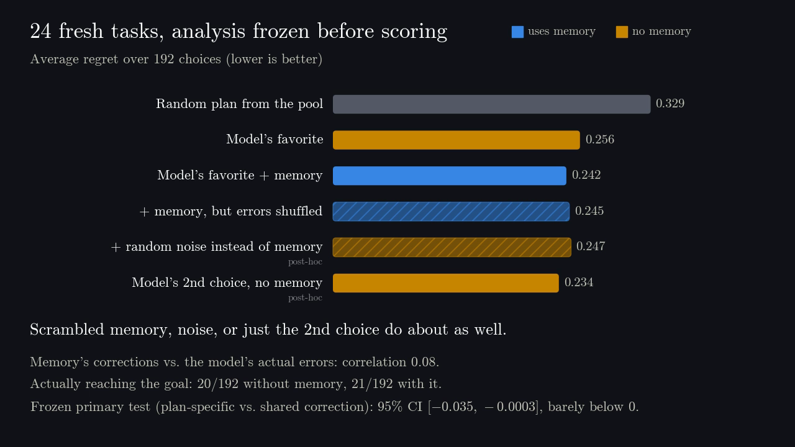

Do Retrieved Errors Improve Decisions?
A Prospective Audit of Memory-Corrected Visual Planning
Abstract
A world model predicts what will happen when an agent takes actions. Wrong predictions can make a bad plan look promising. Can remembering past prediction mistakes help the agent choose better plans?
We test this with an agent navigating through a doorway. Across 24 new navigation tasks and two fixed world models, we compare ways of using memory to score the same candidate plans. We find weak evidence of a small improvement from individual corrections over a shared correction to eligible plans. The improvement concerns visual similarity to the goal: actual goal-reaching changes little, and advantages over uncorrected or shuffled-memory scoring remain uncertain.
We also examine why planning fails: sometimes the candidate plans contain no successful route, sometimes useful plans are excluded from correction, and sometimes the scoring method chooses poorly.

Average regret over 192 choices on 24 fresh tasks (lower is better), from the explainer video. The noise and 2nd-choice bars are post-hoc checks added after the preprint, computed from the public saved scores.
Reproduce
The Zenodo archive contains every candidate plan's saved scores and outcomes, both frozen protocols, and a NumPy-only script (python -B reproduce.py) that recomputes both studies' selections and intervals.
Cite
@misc{lobatogarcia2026retrieved,
title = {Do Retrieved Errors Improve Decisions? A Prospective
Audit of Memory-Corrected Visual Planning},
author = {Lobato Garcia, Daniel},
year = {2026},
month = sep,
note = {Preprint},
url = {https://daniellobato.me/papers/retrieved-errors/}
}The author works at Meta on Instagram AI Search. This research is not affiliated with Meta and does not represent Meta's views. OpenAI Codex assisted with implementation, experimental checks, analysis, visualization, literature lookup and manuscript drafting. The explainer video was made with Claude Opus 5.5.